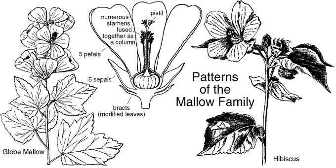

Malvaceae (family)
Key Morphological Features
- Calyx composed of 3-5 partially united sepals.[3]
- Corolla composed of 5 separate petals.
- Perianth often subtended by several bracts.
- Numerous stamens fused to form a column around the pistil.
- Superior ovary composed of 5 or more united carpels (syncarpous).
- Fruit matures as a capsule, schizocarp, often with indehiscent segments.
- Leaves are alternate, usually palmately lobed.

Illustration of typical features of a member of the mallow family. [2]
References
[1] Photo (CC-BY-NC) by iNaturalist user pcrnaturephotos. accessed 12-Sep-20 from iNaturalist
[2] https://www.wildflowers-and-weeds.com/Plant_Families/Malvaceae.htm
[3] Elpel, T. J. (2008). Botany in a day: The patterns method of plant identification; Thomas J. Elpel's herbal field guide to plant families (pp. 78-79). Pony, MT: HOPS Press.